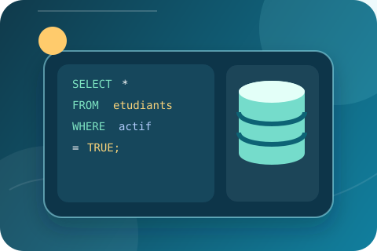
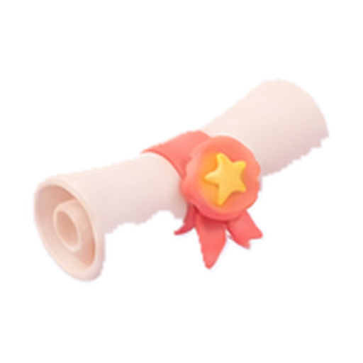

Python
Exemples des 15 SVG et 10 PNG 3D pastel réellement présents dans le projet. Ceci est une composition HTML de contrôle, pas l’application Angular compilée.



Les ressources Open Doodles et 3dicons CC0 sont disponibles dans le catalogue Angular et peuvent être téléchargées localement avec le script fourni dans le projet. Leurs fichiers ne figurent pas dans cette capture.